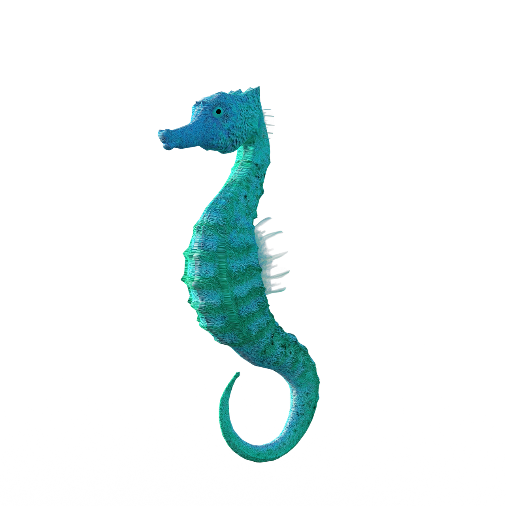
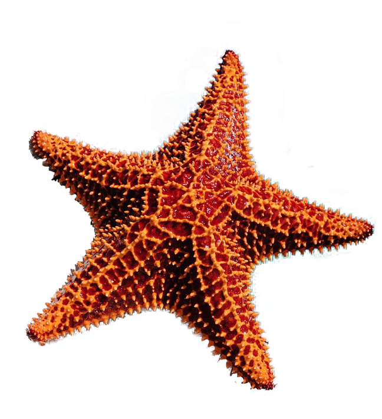
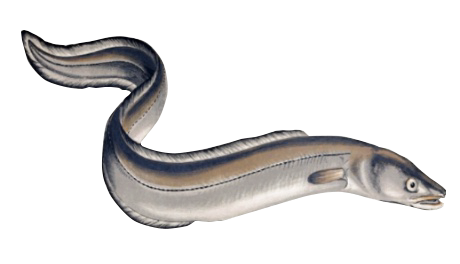
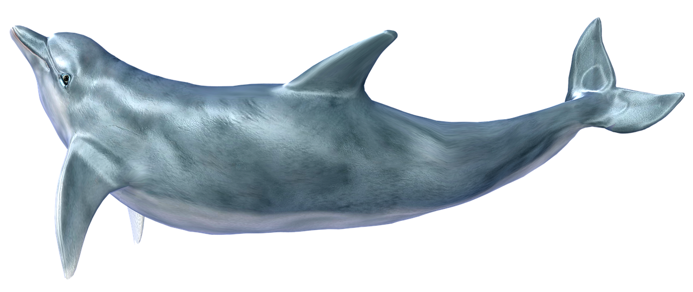
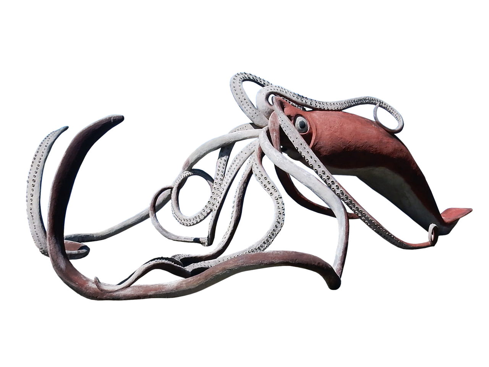
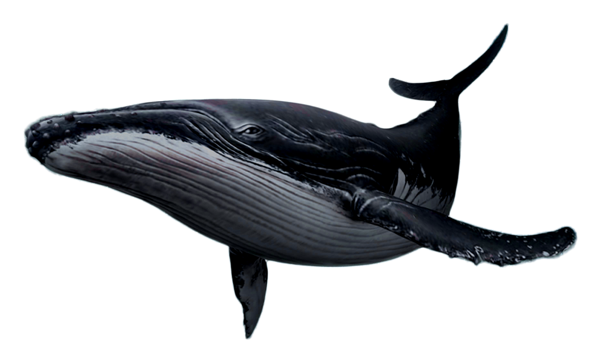

-
5m 이내
해마
해마속 어류는 전세계의 약 북위 45도에서부터 남위 45도에서까지의 바다에 분포하며 열대의 얕은 바다에 주로 살지만 온대 바다에서 사는 종류도 있다. 해마는 수류, 해조, 하구, 산호초, 홍수림, 맹그로브 등에서 살기도 한다
-
5m 이내
불가사리
조개를 압박하여 속의 살을 꺼내먹으며, 천적은 소라고둥이다. 살아있는 불가사리의 종은 별불가사리, 도깨비불가사리, 거미불가사리 등의 약 1,800종 정도이다. 불가사리는 모든 해양에서 발견되며, 북태평양에 사는 불가사리들이 가장 종류가 다양하고, 대한민국의 해안에도 분포한다.
-
20m 이내
갯장어
몸길이는 보통 60~80cm 정도 되지만 최대 2m까지 자라는 개체가 존재한다. 등은 녹회색, 배는 은백색을 띠고 있다. 날카로운 이빨로 작은 물고기나 갑각류, 두족류 따위를 붙잡아 먹는다.
-
500m 이내
돌고래
돌고래는 포유류 소목 고래하목 이빨고래소목에 속하는 종들 중에서 소형에 속하는 해양포유류로, 고래치곤 소형이지만 몸길이가 못해도 2m는 넘기에 생각보다 그렇게 작지는 않다. 사실 매우 큰 범고래, 흰돌고래도 분류상으로는 돌고래에 속한다
-
2,170m 이내
대왕오징어
말 그대로 초대형 오징어이다. 흔히 식재료로 쓰이는 큰 오징어를 대왕오징어라 잘못 부르기도 하나[2] 그것은 훔볼트오징어다. 대왕오징어는 식용이 불가능하다.
-
2,500m 이내
고래
포유강(哺乳綱) 소목 경하마형아목 고래하목에 속하는 동물의 총칭. 약 4~5m를 기준으로 돌고래와 고래를 분류한다. 그러나 흰돌고래와 범고래는 돌고래지만 4~5m가 넘는데, 사실 이는 흰돌고래와 범고래의 학명이 저런 기준이 확립되기 전에 만들어진 것이라 그렇다.